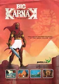

Lo único que se interpone entre ellos y la conquista del mundo es un equipo especial, los Alien Busters: Karen, Garth y Scooter, un robot. ⚠️ La descripción de la ficha los llama Karla, Gordon y Scooter: los nombres cambian según la versión (Gordon y Karla en las occidentales, Garth y Karen en la japonesa) y ninguna fuente dice cuáles salen en la de la bartop (astorm). 🔎 Mirarlo en la pantalla de elegir personaje.
Botón 1 + Botón 2 (en el suelo) ( + ): Súper ataque (gasta vida) — ¿es así?
Botón 1 + Botón 2 (en el aire) ( y luego + ): Battle Download — ¿es así?
Otras dudas de la guía (2; no hace falta buscarlas)
Final (cuenta el desenlace): tras perseguir a la banda por la ciudad, el desierto, la jungla y el río, los cazadores se enfrentan al Sistema Shiva y a su Programa Maestro en la última batalla. ⚠️ El final cambia según el camino (ver «Trucos y secretos»).
En el vídeo, Badrrito lo consigue con Cyber Blue en la dificultad de serie, sin morir. ⚠️ Según The Culture Cache, depende de la puntuación.
Botones
Atacar (puñetazo) · encima de un objeto: recogerlo
Saltar
y luego
Patada en el aire
Empezar (jugador 1)
Meter una moneda
Meter una moneda y empezar (jugador 2)
+
Salir del juego
9

Big Karnak
🔎 Mirar en la bartop:
: Atacar con el arma ⚠️ — ¿es así?
: Saltar ⚠️ — ¿es así?
Otras dudas de la guía (1; no hace falta buscarlas)
⚠️ Wikipedia habla de cuatro niveles; el longplay de «Vídeos» marca 3 fases y el jefe final.
 : Disparar ⚠️ — ¿es así?
: Disparar ⚠️ — ¿es así? : Hacer un ataque especial (rayo, tsunami o ciclón) ⚠️ — ¿es así?
: Hacer un ataque especial (rayo, tsunami o ciclón) ⚠️ — ¿es así?